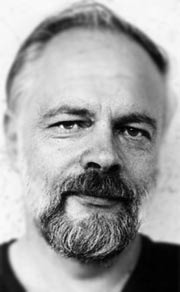

Philip Kindred Dick, más conocido como Philip K.Dick, nació el 16 de diciembre de 1928 en Chicago,
Illinois, Estados Unidos.
Hijo de Dorothy Kindred Dick y Joseph Edgar Dick. Con su hermana melliza, Jane Charlotte Dick, nacieron
seis semanas antes de lo normal. El fallecimiento de Jane, seis semanas después de su nacimiento tras sucumbir a los
cuidados de su madre, afectó profundamente su vida y provocó el recurrente "gemelo fantasma" en sus libros.
Sus abuelos paternos eran irlandeses.
Una vez trasladado a California Beat,Trabajó en la radio antes de ingresar en la Universidad de
Berkeley, donde pasó un año.
Trabajó en una tienda de discos antes de empezar la larga lista de pequeños trabajos como escritor para
ganarse la vida.
Autor de escritura acelerada y desordenada, trascendió su encasillamiento en la ciencia ficción y desde
sus inicios aparece el eje central de su obra: una realidad diferente a lo que parece o estaba destinada a ser.
Aunque sus obras se clasificancomo ciencia ficción, no se centró en los tópicos de la tecnología futurista,
sino en los efectos desconcertantes de entornos diferentes, y con frecuencia distópicos.
Tuvo cinco matrimonios, y tres hijos.
Philip K. Dick falleció el 2 de marzo de 1982 en Santa Ana, California, meses antes del estreno
millonario de la primera película de Blade Runner.
Tras terminar sus estudios secundarios, pasó una breve temporada estudiando en la Universidad de California en Berkeley, pretendiendo especializarse en alemán, aunque abandonó estos estudios sin haberlos terminado. Esto se debió a su negativa a seguir el curso del Reserve Officers Training Corp.
Durante el tiempo que pasó en Berkeley, Dick trabó amistad con el poeta Robert Duncan y, según él afirmaba, fue presentador de un programa de música clásica de la emisora de radio KSMO en 1947. Desde 1948 hasta 1952 fue vendedor de discos,9 su único trabajo antes de publicar su primera historia corta en 1952. A partir de entonces, se dedicó a la escritura a tiempo casi completo, publicando su primera novela en 1955.
Los años 50 fueron una época difícil para Dick, tanto que, como una vez dijo, "ni siquiera podíamos pagar las sanciones por atraso de la biblioteca". Se relacionó con la contracultura anterior a los 60 de California y simpatizaba con los poetas beat y las ideas de izquierda.
Dick se opuso a la guerra de Vietnam, por lo que el FBI le abrió expediente. De hecho, en 1955, Dick y su por entonces esposa, Kleo Apostolides, habían recibido una visita del FBI. La pareja creía que esto era el resultado de las ideas socialistas y actividades izquierdistas de Kleo.
El reconocimiento de la crítica le llegó a Philip K. Dick en 1963, cuando ganó el Premio Hugo por su novela El hombre en el castillo. Aunque Dick fue entonces aclamado como un genio en el mundo de la ciencia ficción, siguió siendo un desconocido para el resto del mundo literario, por lo que sólo pudo publicar sus libros en editoriales especializadas que pagaban poco. En consecuencia, aunque publicó novelas regularmente durante los siguientes años, siguió teniendo dificultades económicas casi hasta el final de sus días
En 1972, Dick donó sus manuscritos y papeles a la Special Collections Library en la Universidad del Estado de California en Fullerton, donde fueron archivados en la Colección de Ciencia ficción Philip K. Dick en la Biblioteca Pollak
La última novela dickiana publicada en vida del autor fue La transmigración de Timothy Archer.
Sus visiones y problemas psicologicos
A la edad aproximada de 13 años, Dick tuvo un sueño recurrente durante varias semanas. Soñaba que estaba en una librería, tratando de encontrar un número de la revista Astounding Magazine. El número en cuestión se suponía que contenía la historia El Imperio nunca cayó, la cual le revelaría los secretos del universo. Dick llegó a tener miedo de que llegar a descubrir la revista lo volviese loco (como en el Necronomicón de Lovecraft o El rey de amarillo de Chambers, prometiéndole al lector la locura).
Estos sueños cesaron enseguida, pero la frase El Imperio nunca cayó habría de aparecer más tarde en su obra.
Durante febrero y marzo de 1974 experimentó una serie de visiones, a las cuales se referiría como "tres-dos-setenta y cuatro" (3 de febrero de 1974). A medida que las visiones crecían en duración y frecuencia, Dick proclamó que había comenzado a vivir una doble vida: una como él mismo y otra como Tomás, un cristiano perseguido por los romanos en el siglo I d. C. A pesar de que había consumido drogas y seguía haciéndolo, Dick aceptó estas visiones como reales, buscando otras explicaciones racionales y religiosas, creyendo que había establecido contacto con una entidad divina de algún tipo, a la que se refería como Cebra, Dios, o más frecuentemente SIVAINVI. SIVAINVI es el acrónimo de SIstema de VAsta INteligencia VIva (en inglés VALIS: Vast Active Living Intelligence System). Dick usó este término como título para una de sus novelas, de carácter semiautobiográfico (además de escribir sobre sus experiencias en otra novela del mismo carácter, Radio libre Albemuth), y posteriormente teorizó que era un satélite de algún tipo que usaba rayos para comunicarse con la gente de la Tierra. Afirmó que dicho ente usaba lo que él denominó un "estímulo desinhibidor" para predisponer a los sujetos a la comunicación, en su caso la vesícula Piscis.
El propio Dick especulaba con la posibilidad de sufrir esquizofrenia. La enfermedad mental fue uno de sus intereses constantes, impregnando su obra. El personaje Jack Bohlen de su novela Tiempo de Marte (1964) es un "exesquizofrénico". La novela Los clanes de la luna alfana (1964) se centra en una sociedad entera de descendientes de enfermos internados en manicomios, así como también en su otra novela Podemos construirle (1972) uno de los personajes principales es tratado por esquizofrenia. En 1965 escribió el trabajo titulado La esquizofrenia y el Libro de los Cambios.
Seudónimos
Ocasionalmente, Philip K. Dick firmó con seudónimos, especialmente Richard Philips y Jack Dowland. El apellido Dowland se refiere al compositor John Dowland, que aparece en varias obras dickianas. El título de la novela Fluyan mis lágrimas, dijo el policía se refiere a la obra más conocida de Dowland, Fluyan mis lágrimas. En la novela La invasión divina, el personaje Linda Fox es una cantante muy conocida en toda la galaxia, cuyas canciones son todas ellas versiones de obras de John Dowland. Además, algunos protagonistas dickianos se llaman Dowland.
El relato corto Orfeo con pies de arcilla fue publicado bajo el seudónimo de Jack Dowland. El protagonista desea ser la musa del autor ficticio Jack Dowland, considerado el mejor autor de ciencia ficción del siglo xx. En la historia, Dowland publica un relato corto titulado Orfeo con pies de arcilla bajo el seudónimo de Philip K. Dick.
En su novela semiautobiográfica SIVAINVI, el protagonista se llama Amacaballo Fat. "Philip", o "Phil-Hippos", significa en griego "el que ama a los caballos", mientras que en inglés, "Fat" (gordo) es la traducción del alemán "Dick".
Aunque el propio Dick nunca empleó esta denominación, sus seguidores y la crítica a menudo se refieren familiarmente a él como "PKD" (tal como se habla a veces de Jorge Luis Borges como "JLB"), y usan los adjetivos "dickiano" y "phildickiano" para describir su estilo y sus temas (como "orwelliano" o "ballardiano").